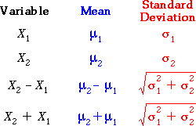
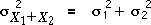

General result
The results generalise further to independent variables that may have different means and standard deviations.

The formulae for the standard deviations are more easily remembered in terms of the variances of the quantities. For example,
